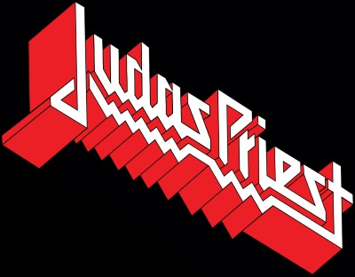
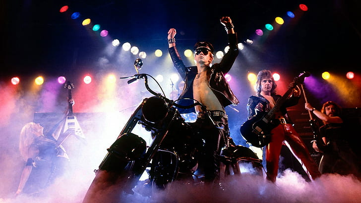

Judas Priest are an English heavy metal band formed in Birmingham in 1969. They have sold over 50 million copies of their albums,
and are frequently ranked as one of the greatest metal bands of all time. Despite an innovative and pioneering body of work in the
latter half of the 1970s, the band had struggled with indifferent record production and a lack of major commercial success until 1980,
when they rose to commercial success with the album British Steel.
The band's membership has seen much turnover, including a revolving cast of drummers in the 1970s and the departure of singer
Rob Halford in 1992. The American singer Tim "Ripper" Owens replaced Halford in 1996 and recorded two albums with Judas Priest, before
Halford returned to the band in 2003. The current line-up consists of Halford, guitarists Glenn Tipton and Richie Faulkner, bassist
Ian Hill and drummer Scott Travis. The band's best-selling album is 1982's Screaming for Vengeance, with their most commercially successful
line-up featuring Hill, Halford, Tipton, guitarist K. K. Downing, and drummer Dave Holland. Tipton and Hill are the only two members
of the band to appear on every album.
Halford's operatic vocal style and the twin guitar sound of Downing and Tipton have been a major influence on heavy metal bands.
Judas Priest's image of leather, spikes, and other taboo articles of clothing were widely influential during the glam metal era of
the 1980s. The Guardian referred to British Steel as the record that defines heavy metal. Despite a decline in exposure during the
mid 1990s, the band has once again seen a resurgence, including worldwide tours, being inaugural inductees into the VH1 Rock Honors
in 2006, receiving a Grammy Award for Best Metal Performance in 2010, and having their songs featured in video games such as Guitar Hero
and the Rock Band series. Judas Priest was nominated for the Rock and Roll Hall of Fame 2020 class, but did not get in.

All images and information have been sourced from the internet. No copyright infringement is intended.